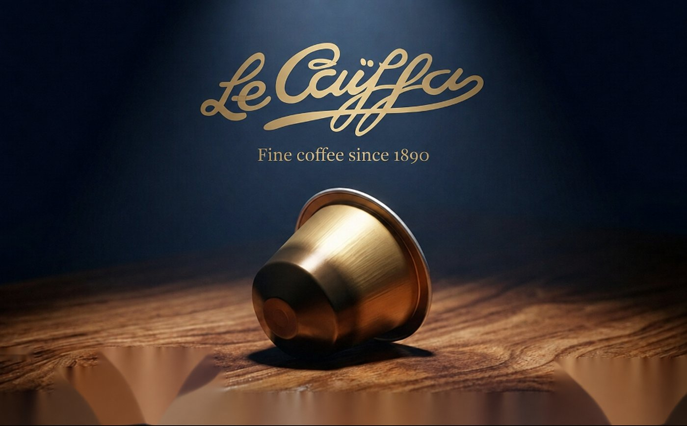

Des origines vietnamiennes exceptionnelles
Nous sélectionnons des cafés Arabica et Robusta distinctifs provenant de régions de culture vietnamiennes renommées, notamment Cầu Đất, Đà Lạt et Buôn Ma Thuột.
Un héritage du café. Réinventé pour aujourd'hui.
Depuis 1890, Le Caïffa porte l'esprit du café vietnamien vers une nouvelle génération. Des origines vietnamiennes exceptionnelles aux torréfactions de spécialité soigneusement élaborées, Le Caïffa combine héritage, savoir-faire et technologie moderne de capsule pour créer une expérience café distinctive à la maison, dans l'hôtellerie et dans les environnements professionnels haut de gamme.

Nous sélectionnons des cafés Arabica et Robusta distinctifs provenant de régions de culture vietnamiennes renommées, notamment Cầu Đất, Đà Lạt et Buôn Ma Thuột.
Des profils traditionnels intenses aux expressions élégantes d'Arabica, chaque torréfaction est conçue pour révéler une facette différente du café vietnamien.
Nos capsules combinent un café de haute qualité avec une technologie avancée de conservation et d'extraction, offrant une expérience espresso riche et constante à chaque tasse.
Notre solution de capsule compostable BIOSTARCH® est conçue pour combiner un café haut de gamme avec une approche plus responsable de l'emballage.

Découvrez la collection de café Le Caïffa, créée pour s'adapter aux différents goûts, humeurs et moments de la journée.
Un profil Robusta puissant inspiré du cà phê sữa đá emblématique du Vietnam.
Une torréfaction traditionnelle profonde combinant Arabica et Robusta pour un espresso riche et puissant.
Arabica haut de gamme avec une torréfaction profonde et une amertume subtile, préservant la complexité de ses arômes.
Arabica Bourbon exceptionnel aux notes de fruits frais et à la finale agrumes éclatante.
Une expérience café distinctive conçue autour du caractère original de l'Arabica, avec une caféine réduite.

Une collection de café complète.
Formats 6 g et 10 g, compatibles avec le système Nespresso®.
Un format pratique et écoresponsable, idéal pour le café sur le pouce.
Disponibles en formats souvenir de 100 g et Horeca / Café de 1 kg.
Pour une expérience vraiment distinctive, découvrez nos grains de café au rhum et au gin.

Le Caïffa développe des solutions café sur mesure pour les entreprises qui cherchent à offrir quelque chose de plus distinctif que le café standard.
Café haut de gamme en chambre, lounges et expériences VIP.
Une expérience café distinctive pour les bureaux, salles de réunion et espaces de direction.
Des solutions café de spécialité conçues pour les environnements de santé haut de gamme.
Une expérience café vietnamienne mémorable pour les voyageurs haut de gamme.
Élevez l'accueil client avec un rituel café raffiné.
Une expression distinctive de l'héritage du café vietnamien.
Des solutions café longue durée conçues pour les environnements exigeants.
Des programmes café personnalisés et des emballages adaptés à votre marque et à vos besoins.

En choisissant les capsules de café Le Caïffa, nos partenaires contribuent directement à leurs objectifs de reporting RSE et ESG.

Oui, très probablement. Les capsules de café Le Caïffa existent sous différentes formes et formats :
Les grains torréfiés Le Caïffa sont également disponibles en sachets cadeaux de 100 g.
Si vous n'avez pas encore de machine à café, nous pouvons également vous en fournir une.
Oui. Les capsules de café Le Caïffa sont entièrement compostables et fabriquées au Vietnam. Les grains d'Arabica et de Robusta proviennent principalement des provinces de Cầu Đất, Đà Lạt et Buôn Ma Thuột, puis sont magnifiquement moulus, torréfiés et emballés à Ho Chi Minh-Ville. Les capsules se biodégradent naturellement et constituent une alternative écologique aux capsules en aluminium ou en plastique.
Oui. Nous proposons des opportunités de co-branding et de marque privée pour les partenaires B2B, selon le volume. Nous pouvons également fournir des machines à capsules compatibles pour les environnements hôteliers et d'entreprise, ainsi qu'un soutien pour la communication sur la durabilité : contenu, certifications et textes d'emballage. Contactez-nous pour discuter des volumes et des conditions.
Oui, Provigood est ouvert aux partenariats de sous-distribution à travers le Vietnam, l'Asie du Sud-Est et le monde entier. Nous avons des accords de distribution existants au Cambodge et explorons activement des partenariats sur d'autres marchés. Contactez-nous via notre page partenaire si vous disposez d'un réseau alimentaire, hôtelier ou de vente au détail établi dans votre pays.
Vous cherchez une solution café distinctive ? Que vous soyez à la recherche de capsules haut de gamme, de grains torréfiés, de cadeaux d'entreprise ou d'un programme café B2B sur mesure, notre équipe peut vous aider à construire la bonne solution.